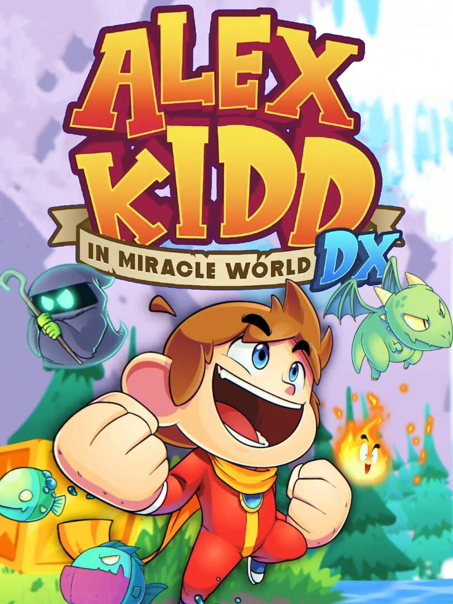

Alex Kidd in Miracle World DX
Alex Kidd in Miracle World DX
Detalhes
|  | |
| Tempo de jogo | 53m 0s |
| Última Atividade | 29/03/2024 12:32:35 |
| Adicionado | 11/02/2025 12:35:29 |
| Modificado | 11/02/2025 12:38:23 |
| Status de Conclusão | Jogado |
| Biblioteca | Steam |
| Fonte | Steam |
| Plataforma | PC (Windows) |
| Data de Lançamento | 22/06/2021 |
| Pontuação da Comunidade | 64 |
| Avaliação da crítica | 62 |
| Pontuação do Usuário | |
| Gênero | Adventure Arcade Indie Platform |
| Desenvolvedor | Jankenteam Merge Games |
| Editor | Merge Games |
| Funções | Single Player |
| Links | Steam Epic Official Discord Twitch |
| Tag | |
Descrição

O lendário Alex Kidd regressa com Alex Kidd in Miracle World DX!
O icónico Alex Kidd está de volta!Regressa ao Miracle World e vive-o como nunca dantes visto.Com novos gráficos em alta definição, jogabilidade e animações melhoradas, redescobre todos os níveis do jogo original e níveis completamente novos que expandem o jogo original e a história por trás de Alex Kidd.
Destrói o malvado Janken the Great e salva o povo de Radaxian de uma vez por todas!O mundo precisa de um herói - de que é que estás à espera?

Revive as lendária batalhas de pedra, papel, tesoura com o Modo Boss Rush!
Prepara-te para bosses sem parar no modo Boss Rush! Enfrenta os lendários Gooseka, Chokkina, Parplin e Janken the Great num combate sem tréguas!
Entra no clássico com o Modo Retro!
Revive a nostalgia dos gráficos de 8 bits com o Modo Retro. A qualquer altura durante o jogo, alterna entre os gráficos melhorados e uma recriação do estilo da arte do original!

Funcionalidades
- Uma Lenda Renascida – Mergulha numa recriação lindíssima de Alex Kidd in Miracle World com nova e impressionante arte e controlos mais precisos e fluídos.
- A nostalgia prevalece sempre – Volta aos anos 80 com o toque de um botão. Independentemente de onde estejas num nível, podes alternar entre os gráficos clássicos de 8 bits e gráficos em alta definição.
- Novos Níveis – Joga novos níveis que expandem a história do jogo original.
- Lutas Contra Bosses Alternativas – Novas e melhoradas mecânicas de lutas contra bosses, com um combate mais intuitivo.
- Música nova e remasterizada - Uma grande variedade de músicas recriadas e faixas remasterizadas do jogo clássico original!
©SEGA, ©2021 Merge Games, all rights reserved. Developed by Jankenteam and Merge Games.